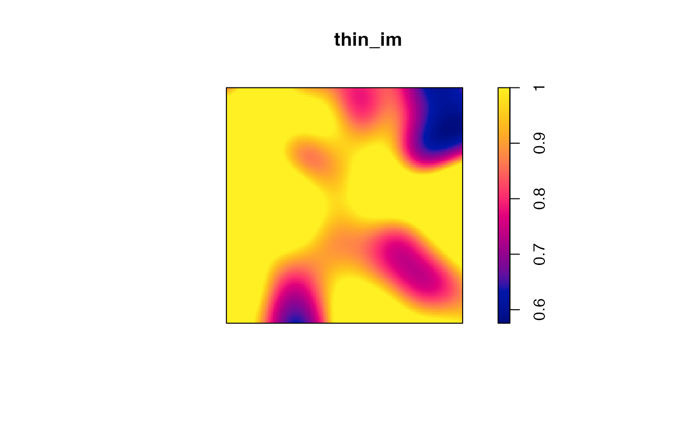
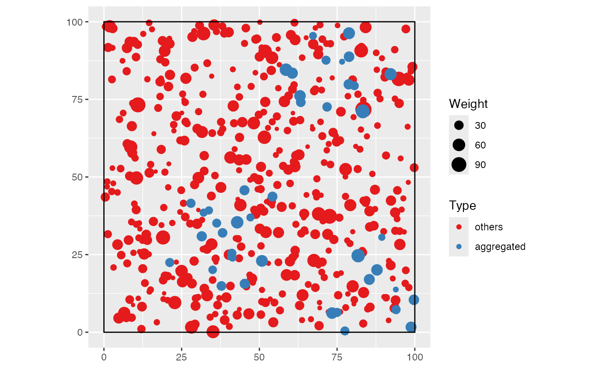

The package proposes several functions to simulate random communities.
Simulating abundances according to classical models
The classical models of ecology are implemented in
divent in the rcommunity().
To write:
- models
Simulating abundances according to an observed abundance distribution
To write:
- multinomial
- unveiled
Simulating spatialized communities
Species
To simulate communities more accurately, species can be drawn one by one. This way, spatial structures and size distributions can be chosen for each species.
The following example shows how to do it: a 1-ha forest made of an
aggregated species of interest and undifferentiated other ones.
rspcommunity() is called with arguments n = 1
and species_number = 1. A list is of point patterns is
obtained and superimposed to make a single wmppp
object.
library("spatstat")
library("dbmss")
library("ggplot2")
library("dplyr")
library("divent")
# A 1-ha window
the_win <- square(100, unitname = c("meter", "meters"))
# Simulate species
the_species <- do.call(
superimpose,
list(
rspcommunity(
# A "grey" species, i.e. all individuals of species out of focus
n = 1, species_number = 1, species_names = "others", size = 500,
# Spatial features: binomial distribution
win = the_win, spatial = "Binomial",
# Size distribution
weight_distribution = "Exponential", w_min = 10, w_mean = 15),
rspcommunity(
# The species of interest
n = 1, species_number = 1, species_names = "aggregated", size = 50,
# Spatial features: aggregated distribution
win = the_win, spatial = "Thomas", thomas_scale = 10, thomas_mu = 20,
# Size distribution
weight_distribution = "Weibull", weibull_scale = 30, weibull_shape = 2,
w_min = 10
)
)
)
# Map the simulated community
autoplot(the_species) +
labs(color = "Species", size = "Diameter")
Post-simulation processing of such spatialized communities may be for instance thinning to reduced the local average basal area.
## [1] 41.0622
# Thinning: the target is at most 40m² locally
target <- mean(G_density) * 40 / sum(G)
thin_im <- G_density
thin_im$v <- pmin(pmax(target / G_density$v, 0), 1)
# Plot the thinning probability
plot(thin_im)
